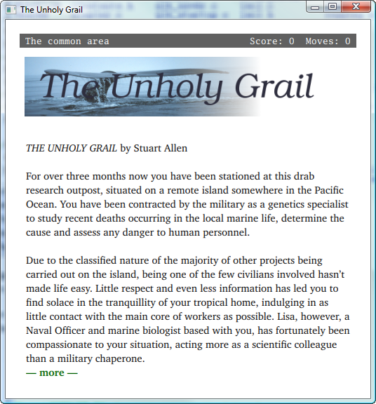

The latest version of JACL can be found on GitHub at https://github.com/DangarStu/JACL. To get a copy of the source, clone the repository:
git clone https://github.com/DangarStu/JACL.git
This will create a directory called JACL with several subdirectories. You will find the executable files in the bin subdirectory after compilation. In the Linux distribution you will find three interpreters: jacl is a console interpreter that uses the GlkTerm library by Andrew Plotkin, while cgijacl and fcgijacl are the two web-based interpreters. cgijacl can be run directly from the command line and is used more for development purposes while fcgijacl must be used with a FastCGI-enabled webserver such as Apache and is used more for production deployments. You will also find the program bjorb, a small utility (based on blc by Ross Raszewski) for creating the Blorb resource files that will contain any images and sounds you wish to use in your games.
The src directory contains the C source code to the JACL interpreter. Also included is the source to glkterm a Glk implementation by Andrew Plotkin based on ncursesw, and the bjorb utility .
| Interpreter | Required Libraries |
|---|---|
| jacl (Posix) | GlkTerm by Andrew Plotkin (included) and ncursesw. |
| cgijacl | No special libraries are required to compile cgijacl, however a POSIX compliant system is needed. |
| fcgijacl | FastCGI development library and Apache module:
sudo apt install libfcgi-dev libapache2-mod-fcgid |
To compile the source for the JACL interpreters and the bjorb under Linux simply change to the src subdirectory and type the following command:
make install
This will compile all the relevant programs and copy the executable binaries into the bin subdirectory, as well as installing the binaries, libraries, and configuration files to /usr/local/jacl/.
In the projects directory you will find several JACL games. A JACL game consists of one or more .jacl files and an optional .blorb file that contains multimedia resources used by the game. If a JACL game consists of more than one .jacl file, the other file will be one of the library files from the include directory.
Inside the projects directory you will also find a temp directory. This is the directory where the interpreter will create the .j2 files. A .j2 file is a concatenation of a main game file and all other files included from that file. They are created by the interpreter when the game is first run and are encrypted by default.
| Under Unix, the user the JACL interpreter is run as must have write permissions to the temp directory. |
The include directory is found inside the projects directory. In the include directory you will find verbs.library, the main interactive fiction library and other language-specific libraries.
In the guide directory you will find this documentation.
Once you have compiled versions of the JACL interpreters, try running one of the provided games by changing to the bin directory and typing the command:
./jacl ../projects/grail.jacl
When you do so, you should see something like the screen below:

When the cgijacl and fcgijacl interpreters start they will first look for their configuration file in the current directory. If this does not exist they will look for it in the etc directory that is at the same level as the games directory. In other words, from the directory the game file being run is in, the jacl interpreter will look for ../etc/cgijacl.conf. If neither of these files is found, the cgijacl or fcgijacl interpreters will also look for the file /etc/cgijacl.conf.
The configuration files for cgijacl and fcgijacl may contain any of the following lines:
| Directive | Description | Default |
|---|---|---|
| access_log FileName | This indicates the file that should be used to log all moves made while playing. If a directory is specified with the trailing forward slash, the file name access.log is appended to the supplied directory. | ../log/access.log (from the location of the game file) |
| error_log FileName | This indicates the file that should be used to log all errors that occur while JACL programs are running. If a directory is specified with the trailing forward slash, the file name error.log is appended to the supplied directory. | ../log/error.log (from the location of the game file) |
| include Directory | This indicates the directory to look in to find any file specified in a #include preprocessor directive. | A directory called include beneath the directory the game file is stored in. If an included file is not found in this directory, the directory the game file is stored in is searched. |
| temp Directory | This indicates the directory to store the processed version of the game file. | A directory called temp beneath the directory the game file is stored in. If this directory does not exist, the .j2 file will be created in the same directory as the game file. |
| google_client_id ClientID | OAuth 2.0 client ID issued by the Google Cloud console for your site. Enables the Google Sign-In flow described in the HTTP and HTML chapter. Empty (or omitted) disables sign-in and leaves the anonymous flow as the only option. | Empty — sign-in disabled. |
| session_secret String | High-entropy secret used to HMAC the jacl_session cookie. Required when google_client_id is set; if empty, sign-in is disabled regardless of the client ID. Treat as a credential — keep out of source control. | Empty — sign-in disabled. |
| session_max_age Seconds | Lifetime of the jacl_session cookie in seconds. The cookie's HMAC includes this expiry, so a stale cookie can't be replayed past it. | 2592000 (30 days). |
Below is an example cgijacl configuration file:
# "cgijacl.conf" # CGIJACL interpreter configuration file. access_log "/usr/local/jacl/logs/access.log" error_log "/usr/local/jacl/logs/error.log" temp "/usr/local/jacl/projects/temp/" include "/usr/local/jacl/projects/include/" # Optional Google Sign-In configuration. Omit both lines (or leave # either empty) to keep sign-in disabled and run the anonymous flow. google_client_id "1234567890-abcdefg.apps.googleusercontent.com" session_secret "long-random-string-known-only-to-this-server"
Once you have compiled the JACL interpreters, try running one of the provided games by changing to the bin directory and typing the command:
./cgijacl ../projects/desa.jacl
This command will start the JACL interpreter on the default port of 4269, resulting in the following output:
CGIJACL Interpreter v4.6.1 WebJACL: No port number specified (-p), using default port 4269. WebJACL server configured on localhost:4269
To play this game, open your favourite web browser and navigate to the URL http://localhost:4269. When you do so, you should see something like the screen below. If not, see the section on Trouble Shooting.
To play this same game from the console, try the following command from the bin directory:
./jacl ../projects/desa.jacl
While the cgijacl interpreter is able to respond to HTTP requests internally, the fcgijacl interpreter is designed to be used with a FastCGI-enabled webserver such as Apache. The cgijacl interpreter is very easy to use and is ideal for developing a new game or allowing a small number of users to play your completed games. The fcgijacl interpreter, when used with a production-quality web server such as Apache, is a better choice for situations where a high level of traffic is expected.
FastCGI is a system for interfacing a web server with an external binary program, in this case the JACL interpreter. With normal CGI, a program is started to handle each individual request. The program executes, produces some output then terminates. With FastCGI, programs are run once then wait in a loop, processing requests as they are made. This suits the JACL interpreter perfectly as it has a fair amount of processing to do when a game is first run, yet very little for an individual move made by a player.
The easiest way to set up fcgijacl with Apache is to use the provided make apache target. This requires Apache2 to be installed on an Ubuntu or Debian system. From the src directory, run:
sudo make apache
This command will:
Once complete, your games will be available at http://localhost/jacl/gamename.fcgi.
If you prefer to configure Apache manually, or are using a non-Debian system, the steps below describe the process in detail.
First, install Apache2 and the mod_fcgid module. On Ubuntu/Debian:
sudo apt install apache2 libapache2-mod-fcgid sudo a2enmod fcgid
Next, create an Apache configuration file at /etc/apache2/conf-available/jacl.conf with the following contents:
<IfModule mod_fcgid.c>
FcgidMaxProcesses 10
FcgidMaxProcessesPerClass 1
FcgidIOTimeout 120
FcgidIdleTimeout 300
FcgidProcessLifeTime 3600
ScriptAlias /jacl/ "/usr/local/jacl/fcgi-bin/"
<Directory "/usr/local/jacl/fcgi-bin">
SetHandler fcgid-script
Options +ExecCGI
Require all granted
</Directory>
Alias /www/ "/usr/local/jacl/projects/www/"
<Directory "/usr/local/jacl/projects/www">
Options -Indexes
Require all granted
</Directory>
</IfModule>
The ScriptAlias directive maps URLs beginning with /jacl/ to the wrapper scripts directory. The FcgidMaxProcessesPerClass 1 setting ensures only one process runs per game, which is appropriate as fcgijacl handles multiple users via session cookies. The FcgidIdleTimeout keeps idle processes alive for 5 minutes to avoid the startup cost of reloading game files.
Enable the configuration and restart Apache:
sudo a2enconf jacl sudo apache2ctl graceful
For each JACL game, create a small wrapper script in /usr/local/jacl/fcgi-bin/. For example, to set up a game called desa.jacl:
#!/bin/sh exec /usr/local/bin/fcgijacl /usr/local/jacl/projects/desa.jacl
Save this as /usr/local/jacl/fcgi-bin/desa.fcgi and make it executable with chmod 755. The game will then be accessible at http://localhost/jacl/desa.fcgi.
Finally, ensure the Apache user (www-data on Debian/Ubuntu) has write permissions to the temp and log directories:
sudo chown -R www-data:www-data /usr/local/jacl/projects/temp sudo chown -R www-data:www-data /usr/local/jacl/logs sudo chmod 775 /usr/local/jacl/projects/temp sudo chmod 775 /usr/local/jacl/projects/data sudo chmod 775 /usr/local/jacl/logs
If a game does not load, check the following log files for error messages:
Common issues include incorrect file permissions on the temp directory, a missing or misconfigured cgijacl.conf file, or the fcgijacl binary not being found at the path specified in the wrapper script.